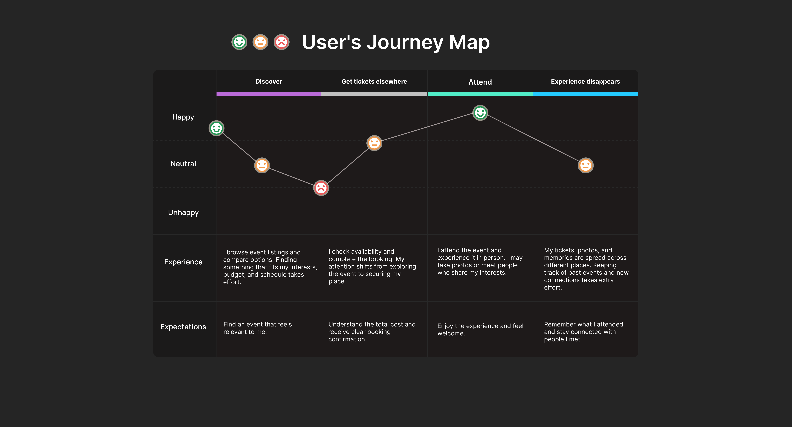

01
The Gap
Problem framing
The journey did not end when the ticket was booked.
Artsy started with a simple problem: cultural platforms are good at getting people to an event, but weak at what happens next. After checkout, attendance becomes a memory the platform cannot see.
There is no easy place to keep a record, build a cultural identity or find someone with similar interests. That is the participation continuity gap.
Participation continuity gapArtsy is not only a way to buy a ticket. It is a layer that helps people discover, remember and continue participating in Dublin's cultural life.

 FigmaMaps, wireframes, UI system and prototype
FigmaMaps, wireframes, UI system and prototype MySQLUsers, events, posts and participation data
MySQLUsers, events, posts and participation data GitHubVersion control and team collaboration
GitHubVersion control and team collaboration ReactReusable responsive front-end components
ReactReusable responsive front-end components